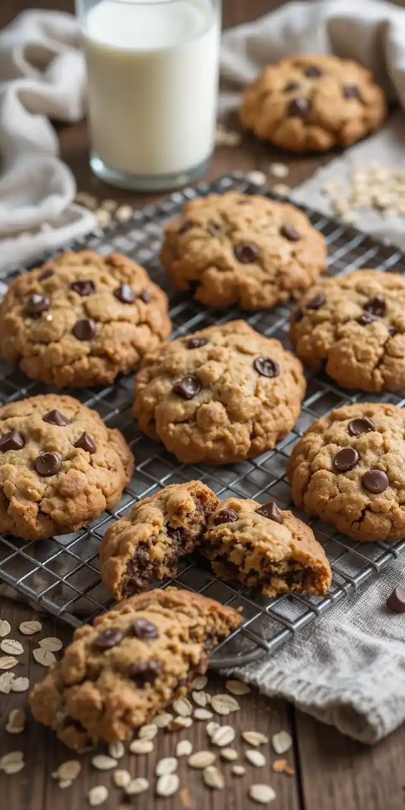

Delicious Cookies Secrect

Description (About Cookies):
A cookie can be a small, baked, sweet food item made from ingredients like flour, sugar, and butter, or it can be a small text file sent by a website to a user's browser to store information about their session, like login status or items in a shopping cart.
Ingredients:
- 1 cup unsalted butter, softened
- 3/4 cup brown sugar, packed
- 3/4 cup granulated sugar
- 2 large eggs
- 1 tsp vanilla extract
- 1/4 cups all-purpose flour
- 1 tsp baking soda
- 1/2 tsp salt
- 2 cups chocolate chip
Instruction:
- Preheat the Oven
Preheat your oven to 350°F (175°C). Line a baking sheet with parchment paper.
- Mix Wet Ingredients
In a large bowl, cream together the butter, brown sugar, and granulated sugar until smooth. Add eggs one at a time, followed by vanilla extract.
- Add Dry Ingredients
In another bowl, whisk together the flour, baking soda, and salt. Gradually add the dry ingredients to the wet ingredients and mix until just combined.
- Fold in Chocolate Chips
Stir in the chocolate chips evenly throughout the dough.
- Shape the Dough
Roll dough into balls (about 1 tablespoon each) and place them on the baking sheet, spaced about 2 inches apart.
- Bake
Bake for 10-12 minutes, or until the edges are golden brown. Let them cool on the baking sheet for 2 minutes before transferring to a wire rack.
Home